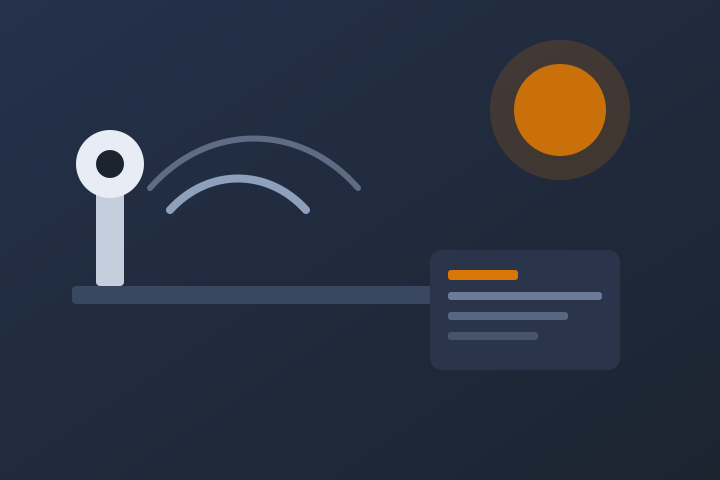

Éducation aux médias
« Ce qui s’est passé hier soir à l’antenne a choqué toute la France » : pourquoi ce titre nous attire
Cette phrase est un exemple de titre sensationnel, pas l’annonce d’un événement réel. En cinq questions, observez ce qui retient d’abord votre attention : la source, les mots, le rythme ou les conséquences.

« Tout le monde a été choqué par la déclaration d’aujourd’hui. » On croise souvent ce type de formule. L’émotion arrive avant le fait, le contexte manque et une réaction collective est présentée sans preuve.
À savoir : Relais Lucide ne révèle ni scandale ni déclaration cachée. Le site propose uniquement un exercice d’éducation aux médias. Le résultat s’affiche sans inscription et vos réponses ne quittent pas votre navigateur.
Votre premier réflexe face à un titre fort
Vous choisissez la réaction qui vous ressemble le plus. À la fin, une synthèse décrit votre réflexe dominant. Ce résultat n’est ni un diagnostic ni une note : c’est un point de départ pour lire plus attentivement.
Quatre questions simples à se poser
- Quelle est la source originale ? Un extrait ou une capture ne suffit pas toujours.
- Qui désigne « toute la France » ? Une généralisation n’est pas une mesure.
- Quel fait précis est rapporté ? L’émotion annoncée ne remplace pas l’information.
- Pourquoi faut-il réagir maintenant ? L’urgence peut être réelle, ou simplement suggérée par les mots.
Avant de partager une information, cherchez la source, la date, le contexte et le fait précis. Quelques secondes suffisent souvent à distinguer une accroche d’une information complète.
— Repère éditorial de Relais LucideComment fonctionne l’exercice
- Répondez à cinq situations inspirées de titres sensationnels.
- Chaque réponse fait ressortir une habitude de lecture.
- Consultez immédiatement votre synthèse, sans créer de compte.
Gratuit · Sans compte · Sans engagement
Les limites de l’exercice
Relais Lucide n’est ni un média d’actualité ni un service de vérification des faits. L’exercice aide uniquement à reconnaître ses habitudes face aux accroches fortes. Pour vérifier une actualité, consultez la source originale et plusieurs médias identifiés.
Votre lecture face au titre choc
Étape 1 sur 5Profil de lecture
Recevoir cette synthèse par e-mail
Cette étape est facultative. Nous enverrons le résultat à l’adresse indiquée et ne l’utiliserons pas à des fins publicitaires.